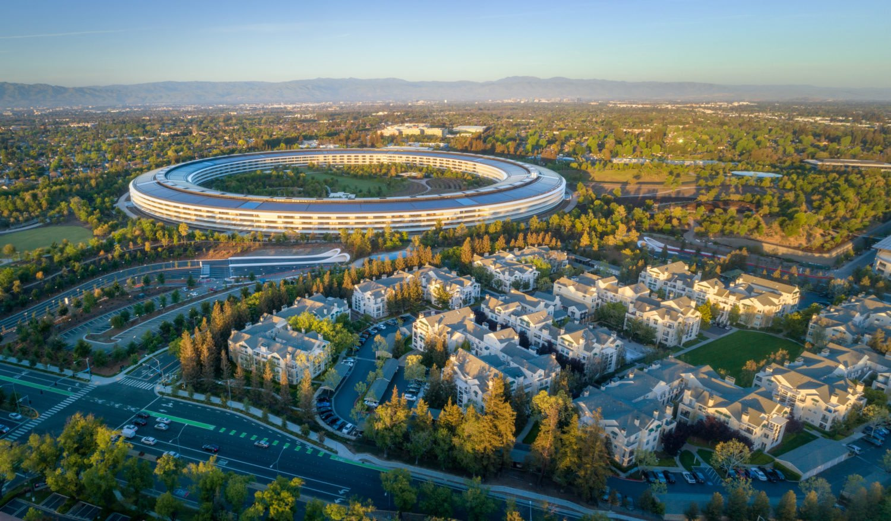
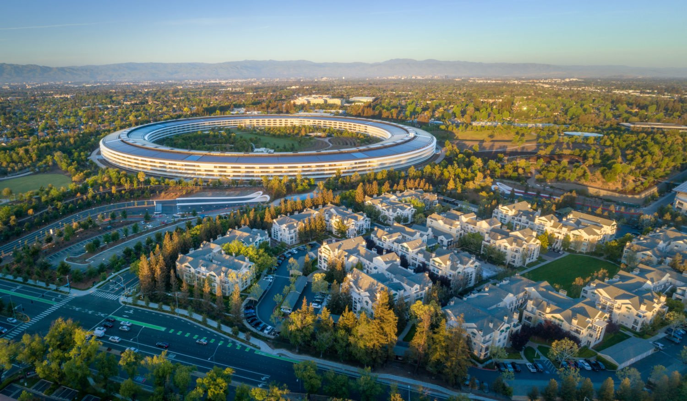

Silicon-Valley
Silicon Valley is a region in the southern part of the San Francisco Bay Area in Northern California that serves as a global center for high technology and innovation. It corresponds roughly to the geographical Santa Clara Valley. San Jose is Silicon Valley's largest city, the third-largest in California, and the tenth-largest in the United States; other major Silicon Valley cities include Sunnyvale, Santa Clara, Redwood City, Mountain View, Palo Alto, Menlo Park, and Cupertino. The San Jose Metropolitan Area has the third-highest GDP per capita in the world (after Zurich, Switzerland and Oslo, Norway), according to the Brookings Institution.